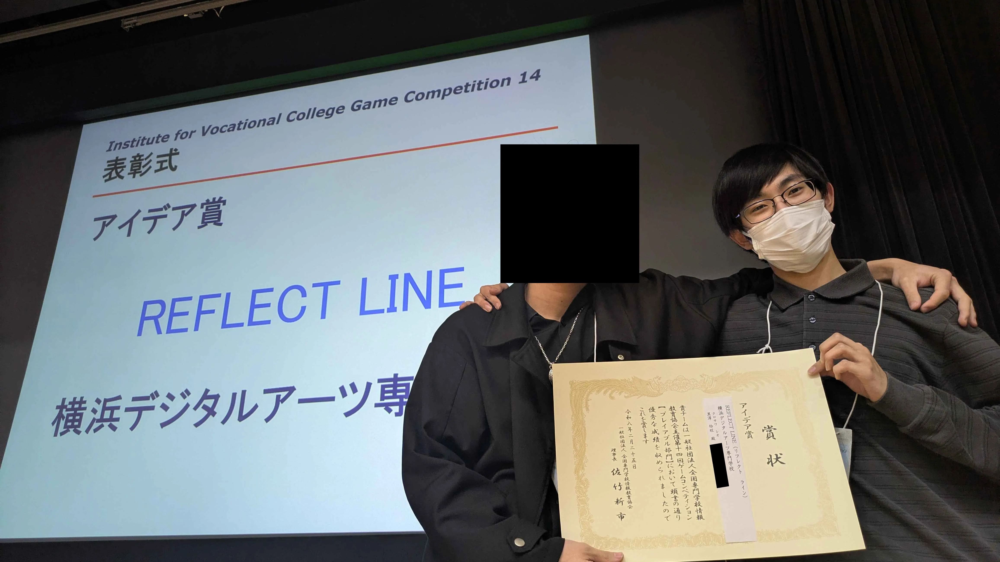
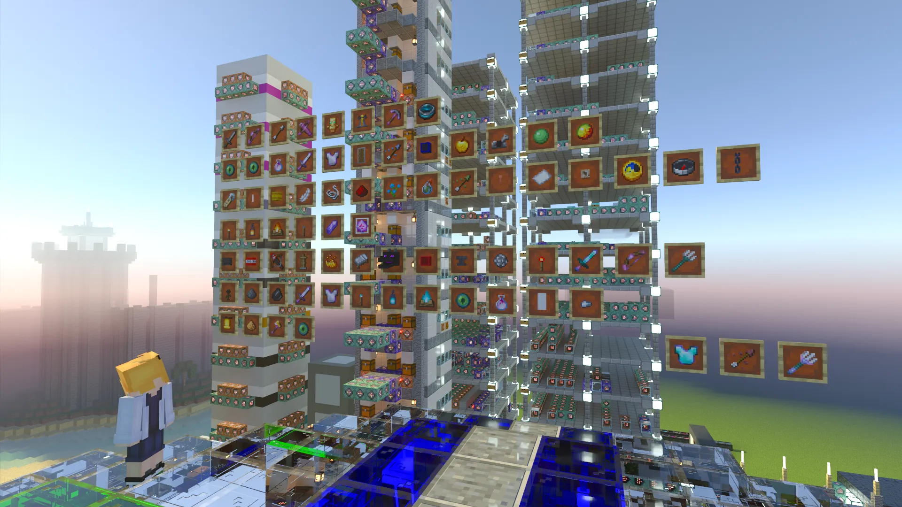
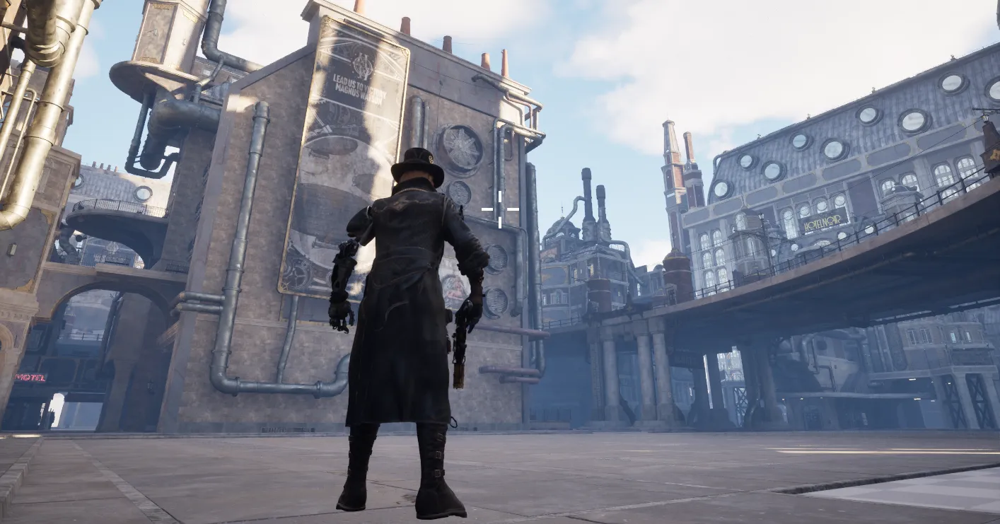
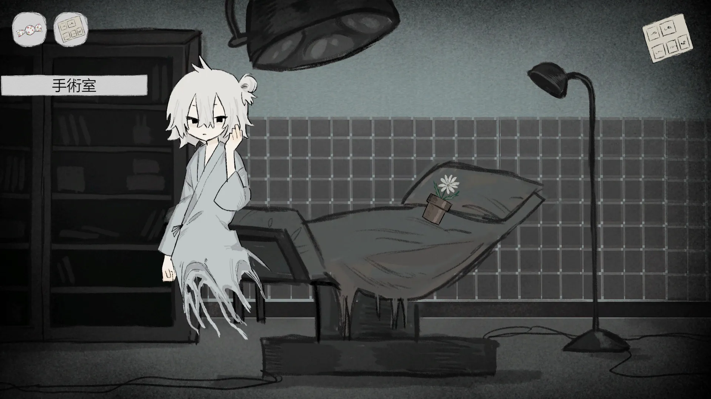
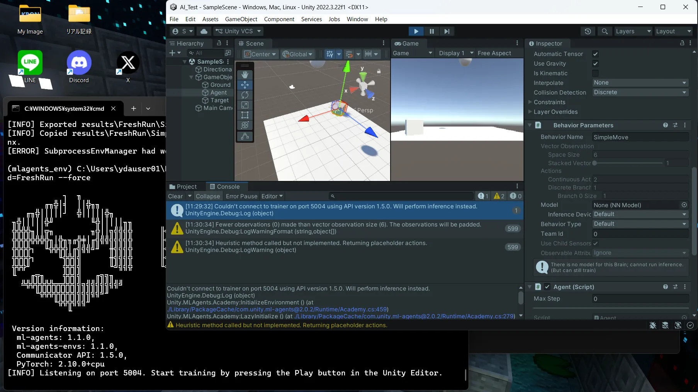

学生活動
学生時代に力を入れたことや、実績の一覧です。
・代表作が「アイデア賞」を受賞
・学年1位の成績(全教科で最高評価)
・学外のゲーム展示イベントに出展
・その他、サークル活動やイベント運営

| 生年月日 | 2005/09/18 |
| 学校・学科 | 横浜デジタルアーツ専門学校 ゲーム科 |
| メール | kurosawareo.job@gmail.com |
| 趣味 |
Minecraftゲーム制作 Minecraftアドオン開発 動画制作 BGM作曲 動画鑑賞 |
| 取得資格 |
計算技術検定 3級 情報技術検定 3級 CGクリエイター検定 ベーシック 情報検定 情報活用試験 3級 CGエンジニア検定 ベーシック |
| プログラム | |
| ゲーム開発 | |
| 動画編集 | |
| デザイン | |
| モデル | |
| サウンド | |
| 連絡 |

学生時代に力を入れたことや、実績の一覧です。
・代表作が「アイデア賞」を受賞
・学年1位の成績(全教科で最高評価)
・学外のゲーム展示イベントに出展
・その他、サークル活動やイベント運営

もう1つの人生。趣味で行っている活動です。
・Minecraftでのオリジナルゲーム制作
・Minecraftのアドオン開発(JSON, JavaScript)
・動画制作、BGM作曲
作品の完成度に応じて、★をつけています。

これはただ避けるゲームではありません。
障害物を跳ね返して別の障害物を壊す。
「避ける×反射」を合わせたアクションゲームです。

Unreal Engine / C++ での開発に挑戦。
現在制作中の「FPS×アクション」ゲームです。

首を伸ばして噛みつけ。
ブロックを壊したり、運んだり、時には自分が移動したりと、ちょっと笑えるアクションゲームです。

廃病院で迷った少年の、ある一時の物語。
そこで出会う5人の少女の幽霊は、生前に五感の1つを失っていたようです。少年は彼女たちの未練を晴らすため、手助けをすることに...

主人公は水？氷・水・水蒸気を切り替えて進もう。
水蒸気で浮き、水で網をすり抜け、氷でボタンを押すなど、水の多様な特性を活かしたギミックが登場します。
作品の完成度に応じて、★をつけています。

「導入するだけですぐ使える」
汎用性と使いやすさを重視した自作ライブラリです。

あの有名な落ちものパズルゲームを再現。
Tスピンなどの特殊な技にも対応。
BGMは自作アレンジ曲を使用しています。

「学ばせ方を学ぶ」
UnityのAI強化学習機能を使い、簡単なゲームに敵AIを実装する技術研究の作品です。